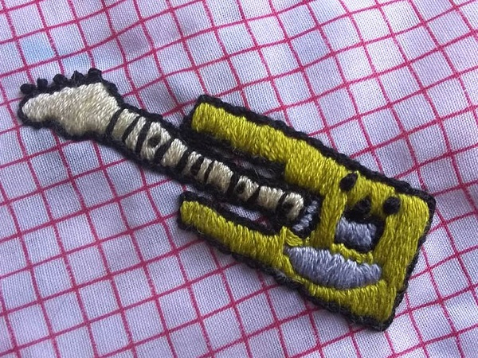
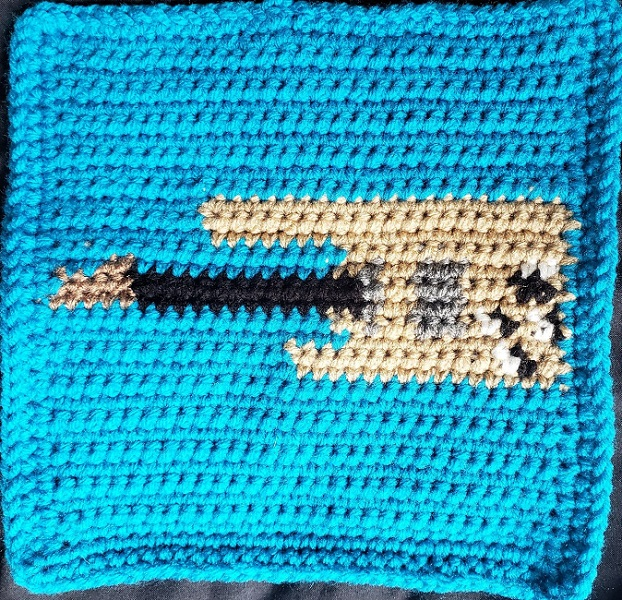
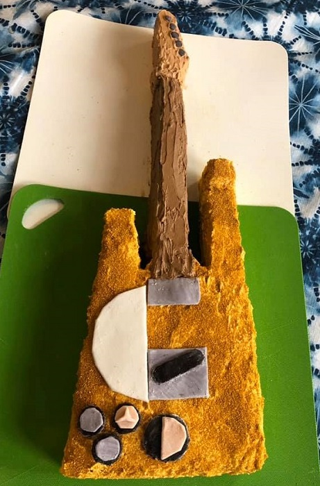
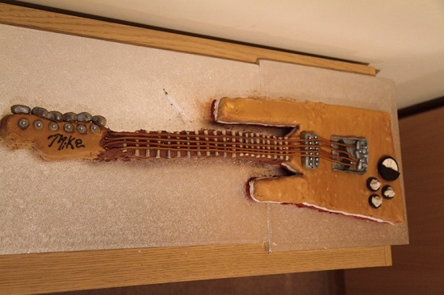

With such a unique visual appeal, it's no wonder this guitar has inspired a lot of cool projects and attempts at replication.
The Chessmaster II (aka Mein Chessmaster aka Goldie) is a beautiful and incredibly accurate replica over 6 years in the planning and making, with all the original knobs and dials matched and a functional VU meter (Volume Unit meter) which he wired up. Mike restores and replicates RCA Theremins, so precision and manufacturing perfect parts are his specialty.
Mike gave Flansburgh a driver to power the original Chessmaster's (previously nonfunctional) VU meter in 2015, and in return was given a matching white pickguard for the Chessmaster II when the original Chessmaster got its pickguard in 2019.
He also built the body for this replica:
More recently, Mike Buffington also made a baritone Chessmaster, which he dubbed "the Opponent"!
This guitar has slightly larger baritone proportions and an inverted color scheme: black pickguard, silver body, and a midnight blue back (to the dark mahogany-red back of the original).
These little stickers were designed by me in Adobe Illustrator, with some pointers from Mike on improving the proportions. They were printed through StickerApp, and I still have a limited number left up on my Gumroad. I intended to give these out at a TMBG concert, before a global disaster ruined all the fun. Still, I look forwards to sharing them sometime in a brighter future.

I am quite happy with how they turned out, and I might go for a third printing eventually. If so, I might make the pickguard solid white instead of bare holographic foil and remove the grey on the Gretsch pickup plate.
When I first gained access to a laser cutter, I decided to try my hand at making little wooden Chessmaster cuts for keychains or pins (both of which are still something I would LOVE to see the TMBG merch store do). The VU meter seemed like a convenient placement for a hole through, and I ended up trying out several different sizes and materials.


I sent several to friends and even made a big batch that were covertly distributed by my good friend AJ on the 2019 JoCo Cruise.
In retrospect, there are a lot of subtle issues with the proportions on this design, but I'm still pretty proud of them.
Ah, cardboard. An accessible material for the amateur crafter who's into aesthetics over functionality. When I found out about the Chessmaster in early 2018, I fell in love and wanted a replica of my own. This was constructed from what I could scavenge from the high school art room: cardboard, spray paint, and a whole lot of hot glue. It's obviously nonfunctional, but I am not a lefty and can't play guitar, so that's irrelevant.

A year later, my now-pal Seymour decided to make his own, at a scale which would fit the dolls in his collection. More information on how he made this one is on his site.


This little patch was handmade and sent to me by Kit Hornby in a fun TMBG stuff mail exchange. I love the little :•D face that the knob placement makes. I'm going to try to get my sister to help me sew on a backing. I'm not sure where it will go afterwards; perhaps it will join my TMBG pin collection on my backpack.

Amber Disinvited-guest crocheted this quilt square as part of a project to complete a TMBG-themed blanket. The finished product came out quite well.

This is a fun one. Let them eat cake!
This cake was made by Anneliese Canada in honor of John F's 60th birthday.

This second version was made in 2011 for (who else) Mike Buffington. The talented pastry chef in this case was Heather Marshall.
